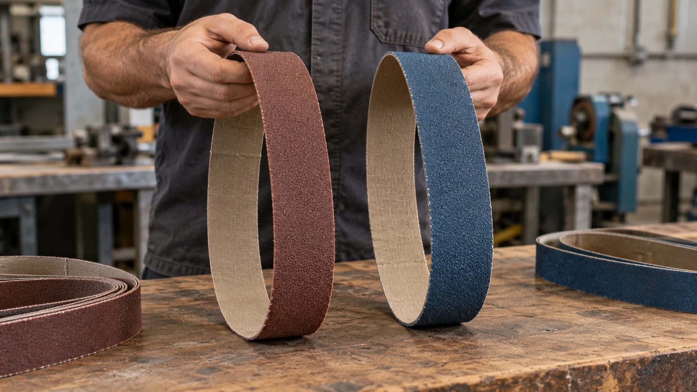

A escolha entre uma cinta de óxido de alumínio e uma de zircônio depende do material trabalhado, da quantidade de material que será removida e das condições da lixadeira. Os dois abrasivos podem trabalhar metais, mas apresentam comportamentos diferentes durante o uso.
Quando escolher óxido de alumínio
O óxido de alumínio é um abrasivo versátil, utilizado em operações de desbaste, preparação e acabamento. Conforme a construção da lixa, pode atender aplicações em madeira, aço carbono, metais não ferrosos e outros materiais.
É uma opção para oficinas que realizam trabalhos variados e precisam combinar capacidade de corte, disponibilidade de granulações e custo de compra.
Isso não significa que todas as cintas de óxido sejam iguais. O costado, a resina, a distribuição dos grãos e a flexibilidade também influenciam o resultado.
Quando considerar o zircônio
As cintas conhecidas comercialmente como “de zircônio” ou “de zircônia” utilizam um abrasivo à base de alumina-zircônia. Elas são frequentemente empregadas em operações de maior remoção de material, especialmente no trabalho com metais.
Uma característica importante é a autoafiação: durante o trabalho, a fratura dos grãos pode expor novas arestas de corte.
Para aproveitar esse comportamento, a aplicação precisa oferecer condições adequadas de pressão e funcionamento. Em uma operação muito leve, o abrasivo pode perder agressividade sem aproveitar todo o seu potencial. Isso não significa que se deva forçar a peça ou ultrapassar os limites da máquina.
Comparação prática
| Critério | Óxido de alumínio | Zircônio |
|---|---|---|
| Perfil de uso | Aplicações variadas, do desbaste ao acabamento | Frequentemente escolhido para desbaste mais exigente |
| Condições de trabalho | Dependem da construção da lixa | Pressão e potência disponíveis merecem atenção especial |
| Escolha econômica | Avaliar preço, rendimento e acabamento | Avaliar se o ganho de produtividade compensa o custo |
E o aquecimento da peça?
A temperatura também depende da velocidade da cinta, da pressão, do tempo de contato e do estado do abrasivo. Uma cinta de zircônio não elimina o risco de aquecer a peça.
Na cutelaria, principalmente em peças já tratadas termicamente, controlar o processo continua sendo essencial.
Como decidir
Compare o tempo de trabalho, a quantidade de peças produzidas e o acabamento obtido em condições semelhantes. O menor preço por cinta nem sempre representa o menor custo por peça.
Fale com a Robusta
Fale com a Robusta e informe o material, a medida da cinta e a operação que você realiza. Essas informações ajudam a selecionar uma opção adequada à sua aplicação.
Conversar pelo WhatsApp